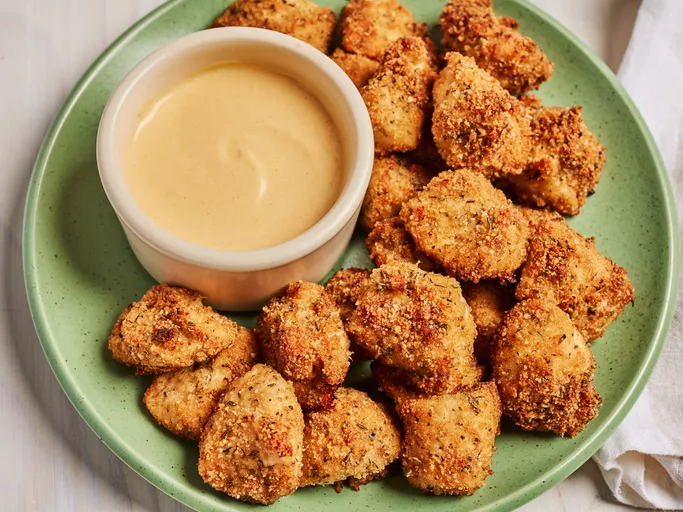

Chicken Nuggets
Chicken nuggets are a popular fast food item that can be easily made at home. They are crispy on the outside and tender on the inside, making them a favorite among kids and adults alike.

Ingredients
- Chicken Breast: boneless, skinless chicken breast is the best choice.
- Breadcrumbs: use plain or seasoned breadcrumbs for coating.
- Eggs: beaten eggs help the breadcrumbs stick to the chicken.
- Flour: for dredging the chicken before coating.
- Spices and Seasoning: salt, pepper, garlic powder, and paprika for flavor.
- Oil: for frying, use vegetable or canola oil.
- Dipping Sauce: ketchup, BBQ sauce, or honey mustard for serving.
How to make Chicken Nuggets step by step:
- Cut the chicken breast into bite-sized pieces.
- Set up a dredging station with flour, beaten eggs, and breadcrumbs.
- Coat each piece of chicken in flour, then dip in egg, and finally coat with breadcrumbs.
- Heat oil in a frying pan over medium heat.
- Fry the chicken pieces until golden brown and cooked through, about 4-5 minutes per side.
- Drain on paper towels and serve with your favorite dipping sauce.
- Enjoy your homemade chicken nuggets!